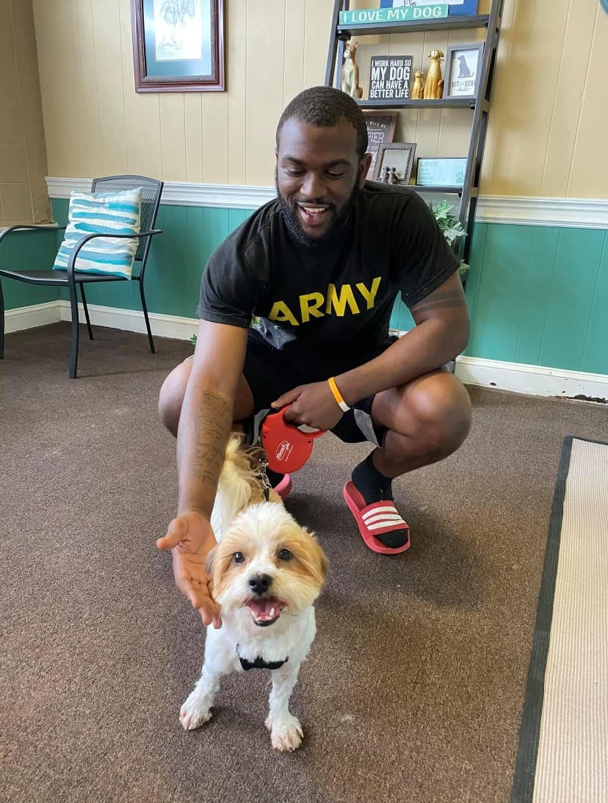
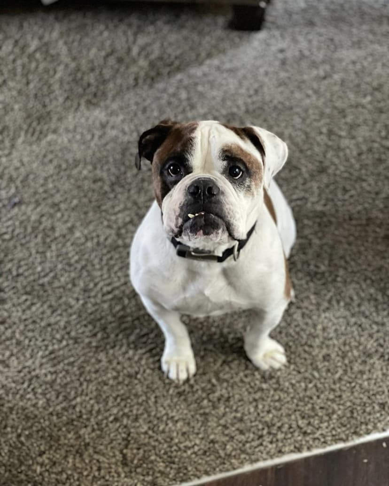

About us
Jack's Pack Dog Development
Jack's Pack Dog Development was created with one goal in mind, to help canines live a better life amongst their humans. Jack was an American bulldog born on January 29th, 2013 in Newport News, VA. I had the pleasure of growing close with him over the span of his life. He was well-loved and spoiled by his owners (and he knew it). One of whom is my best friend and although I didn't know nearly as much about dogs as I thought I did, I knew I always had a passion for dogs. Jack sadly passed away on February 21st, 2021 at the age of 8, due to health complications. He now lives on in his loved one’s hearts, including mine. When it was time for me to come up with a name for my business all I could think about was how much Jack really grew my love and passion for dogs over the years. So now, his name also lives on through this business named after him dedicated to helping canines and humans simply, enjoy living with their new human packs, as Jack did with his.
 About me
Jack's Pack Dog Development